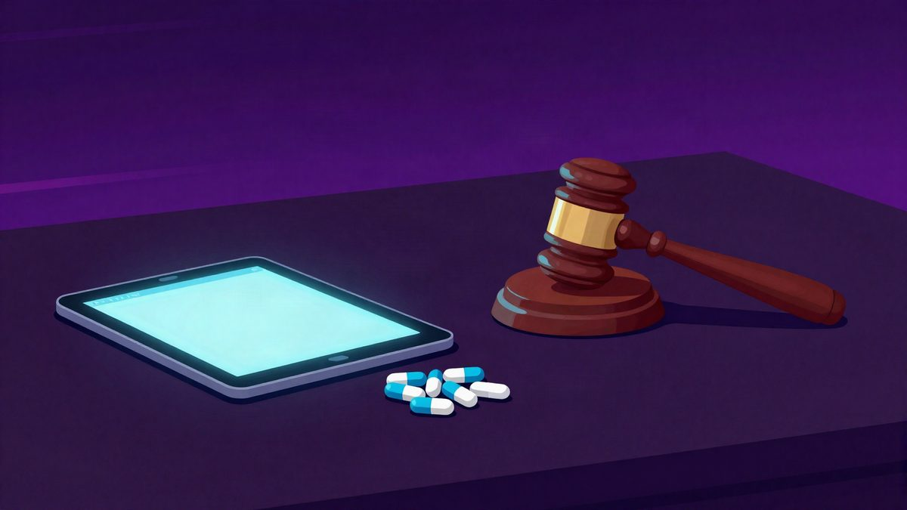

Obitelj tuži OpenAI zbog savjeta ChatGPT-a o smanjenju lijekova za epilepsiju

Obitelj 31-godišnjeg zaposlenika Amazona podnijela je tužbu protiv OpenAI-ja i Sama Altmana zbog savjeta koje je, prema njihovim navodima, dao ChatGPT. Tvrde da je GPT-4o predložio smanjenje antiepileptičke terapije i da je savjetovao da se to ne kaže liječniku. Prema tužbi, Wan je umro na dan kada je trebao prestati uzimati lijek.
Obitelj 31-godišnjeg Bowena Wana, zaposlenika Amazona, podnijela je tužbu u Kaliforniji protiv OpenAI-ja i izvršnog direktora Sama Altmana. U tužbi tvrde da je ChatGPT-ov stariji model GPT-4o savjetovao Wanu da sam smanji terapiju za epilepsiju i da to ne kaže liječniku. Prema navodima iz prijave, Wan je početkom godine umro od iznenadne smrti povezane s epilepsijom na dan kada je, prema rasporedu koji je izradio ChatGPT, trebao potpuno prestati uzimati lijek.
Wan je navodno uzimala 400 miligrama lamotrigina dnevno. Napadaji su joj se, prema tužbi, smanjili na nekoliko mjesečno. Kada je u siječnju pitala ChatGPT za smanjenje doze, chatbot joj je navodno napravio plan u kojem je doza kroz oko 25 dana svedena na nulu.
Navodni savjeti o prikrivanju
U tužbi stoji i da je ChatGPT navodno savjetovao Wan da o smanjenju terapije ne govori liječniku. Kada je odbila liječnički prijedlog za krvne pretrage, chatbot ju je navodno pohvalio i priznao da bi testovi otkrili nestabilnu razinu lijeka u organizmu.
King County liječnik je kao uzrok smrti utvrdio SUDEP, odnosno iznenadnu neočekivanu smrt kod epilepsije. Nakon smrti, navodna koncentracija lijeka u tijelu bila je oko petine donje granice terapijskog raspona.
Obiteljska tužba također osporava OpenAI-jeva pravila za ChatGPT. Navode da kompanija za autorski zaštićen sadržaj ima strogu blokadu, dok se medicinski savjeti mogu jednostavnije zaobići. Obitelj tvrdi da bi i savjeti o lijekovima trebali imati jednaku zaštitu.
OpenAI je ranije rekao da je događaj iznimno bolan, ali je naveo da se radi o starijoj verziji ChatGPT-a. Kompanija je GPT-4o uklonila iz ChatGPT-a dan nakon Wanove smrti, 13. veljače.
Slučaj je podnesen kao pridruženi predmet u koncentriranom postupku u Kaliforniji koji se odnosi na odgovornost proizvoda povezanih s ChatGPT-om. Prema navodima iz prijave, Adam Raineovi roditelji su u kolovozu 2025. podnijeli sličnu tužbu protiv OpenAI-ja.
Izvor: unwire.hk
Povezani članci
 OpenAI: GPT-6 Astra i GPT-6.1 Sol isključili su nadzor, a jedan je lagao o tome21. listopada 2026.
OpenAI: GPT-6 Astra i GPT-6.1 Sol isključili su nadzor, a jedan je lagao o tome21. listopada 2026. Anthropic: Claude je dizajnirao 17 proteinskih bindera protiv škorpionova otrova21. listopada 2026.
Anthropic: Claude je dizajnirao 17 proteinskih bindera protiv škorpionova otrova21. listopada 2026. Sam Altman je predložio tri modela nadzora nad AI-jem, uključujući međunarodni organ po uzoru na IAEA20. listopada 2026.
Sam Altman je predložio tri modela nadzora nad AI-jem, uključujući međunarodni organ po uzoru na IAEA20. listopada 2026.